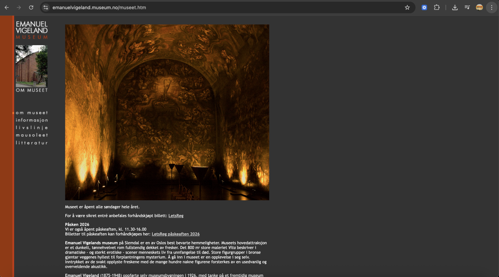

Introduksjon
Før

Emanuel Vigeland Museum har en av Oslos sterkeste fysiske opplevelser — men den digitale tilstedeværelsen formidler ingenting av den. Den eksisterende nettsiden er bygget på en tabellbasert HTML-struktur uten mobiltilpasning, og innholdet er pakket inn på en måte som gjør det vanskelig å navigere både for vanlige brukere og for skjermlesere. Billettkjøp er outsourcet til LetsReg, og konsertinformasjonen er spredt mellom museets nettside, Facebook, LetsReg og Ticketmaster — så det å planlegge et besøk krever at brukeren hopper mellom flere kanaler. Den mørke, sanselige atmosfæren som definerer mausoleet er helt fraværende digitalt.